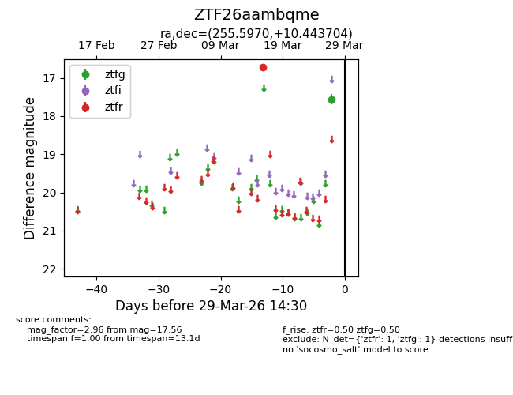
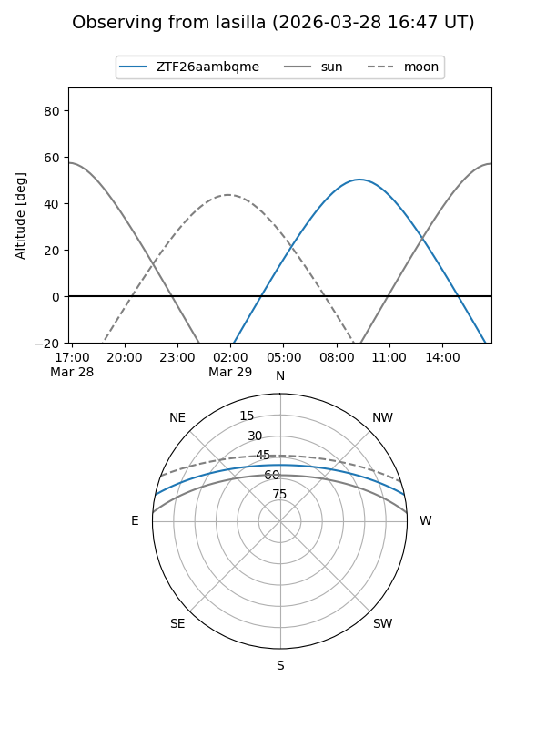
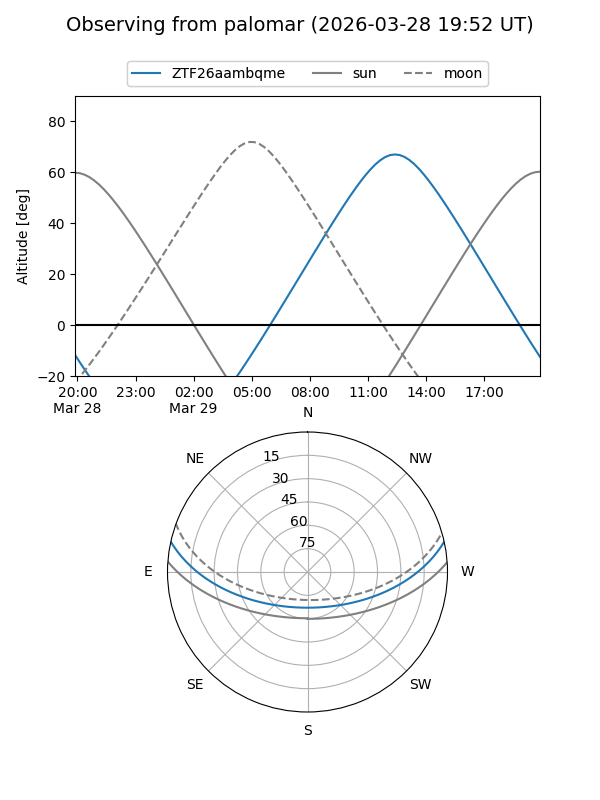

ZTF26aambqme
Target ZTF26aambqme at 2026-03-29 14:33
Aliases and brokers:
FINK: link
Lasair: link
ALeRCE: link
alt names
ZTF26aambqme (ztf,fink_ztf)
Coordinates:
equatorial (ra, dec) = 255.5970,+10.44370
equatorial (HMS+DMS) = 17:02:23.27,+10:26:37.34
galactic (l, b) = (30.0451,+28.91929)
Flags:
Photometry:
last ztfg=17.56, ztfr=16.71
1 ztfg, 1 ztfr detections
Lightcurve

Visibility


Additional plots